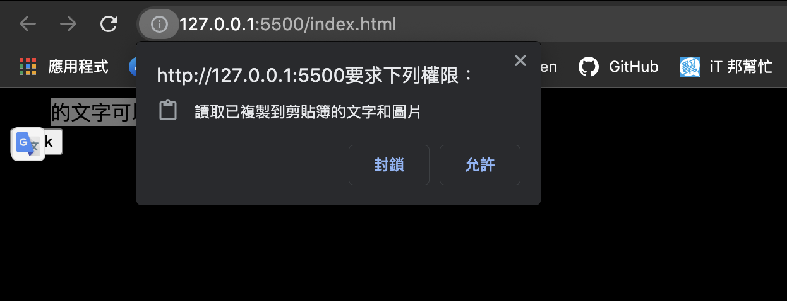

那些被忽略但很好用的 Web API / Clipboard
Posted by Max on
CTRL + C & CTRL + V，兩個指令就能讓你成為工程師。
Selection API 掌管著網頁中的「反白」，Clipboard API 則是掌管著網頁中的「複製」，不管是做報告、分享文章或是寫 code，都時常會參考、借鑑網頁中的內容，這時候我們就會執行「複製」，將文本內容暫時放在電腦裡的記憶體中，而這項動作只要是發生在我們網頁中，我們就可以利用 Clipboard API 來動一些手腳。
Clipboard
Clipboard 指的是瀏覽器中的系統剪貼簿，我們可以透過一些指令來訪問它，進而執行讀寫的動作，不過由於使用者可能會將一些機敏性的資料存放在剪貼簿中，所以為了避免個資外洩，除非使用者允許授權，不然瀏覽器都會限制網頁讀取使用者的剪貼簿，不過寫入的部分就沒有限制了。
如果使用者拒絕了授權，只能透過使用者主動調整授權才能夠開啟功能，所以記得透過 Permissions.query() 來確認授權狀態，並提醒使用者。
# Navigator.clipboard
要取得瀏覽器的 Clipboard 物件，只要訪問 navigator 底下的 clipboard 屬性即可：
const board = navigator.clipboard;
console.log(board); // Clipboard 物件# Clipboard.readText
取得 Clipboard 物件後，我們就可以使用它自身的 method 來讀寫剪貼簿了，而 readText 就是讓我們可以讀取剪貼板目前儲存的文本內容，呼叫它後會回傳一個 Promise，需要用 then 來串接並取得文本：
<button>Get Clipboard</button>
<script>
const button = document.querySelector("button");
button.addEventListener("click", function () {
navigator.clipboard.readText().then((text) => {
console.log(text); // 剪貼簿中的文本內容
});
});
</script>你該注意：
- 有些瀏覽器可能會阻止「直接命令」剪貼簿，最好是透過使用者點擊按鈕或監聽事件來處理。
navigator.clipboard取得的是當下視窗的系統剪貼簿，所以如果你是透過 Console 面板執行的話有可能會報錯，因為它是在「開發者工具」視窗下執行的。
# Clipboard.writeText
知道怎麼「讀」之後，就要來看看怎麼「寫」了，writeText 可以讓我們修改目前使用者儲存在剪貼簿的內容，只要將指定內容當作參數傳入即可，另外在執行後依然會回傳 Promise，當修改成功後便可以執行 then 中的 Callback，或是在失敗後進行 Error Handle。
<< 你可以試試看
<button>Set Clipboard</button>
<script>
const button = document.querySelector("button");
button.addEventListener("click", function () {
const text = "你複製的東西被我變成這段文字了";
navigator.clipboard
.writeText(text)
.then(() => alert("success"))
.catch(() => alert("fail"));
});
</script>ClipboardEvent
除了可以主動操作 Clipboard 物件以外，瀏覽器還提供了一些剪貼簿的相關事件讓我們監聽，當使用者執行 cut、copy 和 paste 的操作時，便能透過事件 Callback 執行指定動作，且 Callback 所獲得的 Event 物件當中還會多一個 clipboardData 屬性，該屬性也會有自身的 method 可以使用。
# Event.clipboardData.getData
getData 可以讓我們取得剪貼簿中的資料，它有一個必傳的參數是資料格式，一般來說都是使用 "text/plain" 來指定「純文字資料」。
它和前面提到的
Clipboard.readText功能基本一樣，但要注意這兩者所屬的物件是不同的。
// 讓整個網頁可以進行編輯，這樣才能觸發貼上事件
document.designMode = "on";
// getData 通常搭配 paste 事件，在 cut、copy 事件中使用會拿不到東西
document.addEventListener("paste", function (e) {
const clipboardText = e.clipboardData.getData("text/plain");
console.log("使用者貼上了文字：" + clipboardText);
});# Event.clipboardData.setData
不曉得各位有沒有在他人部落格中複製程式碼後，發現貼上後的內容多了幾行作者的著作申明？其實這樣的功能就是透過 setData 做到的，它可以讓我們修改使用者剪貼簿內容。
它和前面提到的
Clipboard.writeText功能基本一樣，但要注意這兩者所屬的物件是不同的。
// setData 通常搭配 cut、copy 事件，在 paste 事件中使用會沒有效果
document.addEventListener("copy", function (e) {
// 利用昨天認識的 Selection API 取得使用者反白的文字
const selectionText = window.getSelection().toString();
const extraText = "\n注意：你複製的這段文字屬於 Max";
e.preventDefault(); // 阻止使用者本來要執行的「複製」動作
e.clipboardData.setData("text/plain", selectionText + extraText);
});其實在 Clipboard API 被廣泛的被瀏覽器採用前，要處理剪貼簿都是透過 document.execCommand，但因為它有不少缺點，所以逐漸被取代，如果各位有興趣知道的話，可以再去搜尋了解。
其實你有注意的話，今天的示範程式碼中有出現 DesignMode 和 Selection 的身影，這三者其實常常一起使用，這也就是為什麼我會在前面的章節一直提到要等三個 Web API 一起介紹完後，再來實際做一個文章編輯器的應用。到了今天我們終於把它們通通習得了，就準備明天動手寫吧！
- 此篇文章為「iT 邦幫忙鐵人賽」參賽文章，同步發表於 iT 邦幫忙 -